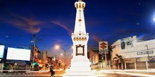

SEJARAH YOGYAKARTA
Daerah Istimewa Yogyakarta atau biasa disingkat dengan DIY adalah salah satu daerah otonom setingkat provinsi yang ada di Indonesia. Propinsi ini beribukota di Yogyakarta. Dari nama daerah ini yaitu Daerah Istimewa Yogyakarta sekaligus statusnya sebagai Daerah Istimewa. Status sebagai Daerah Istimewa berkenaan dengan runutan sejarah berdirinya propinsi ini, baik sebelum maupun sesudah Proklamasi Kemerdekaan Republik Indonesia. Menurut Babad Gianti, Yogyakarta atau Ngayogyakarta (bahasa Jawa) adalah nama yang diberikan Paku Buwono II (raja Mataram tahun 1719-1727) sebagai pengganti nama pesanggrahan Gartitawati.
